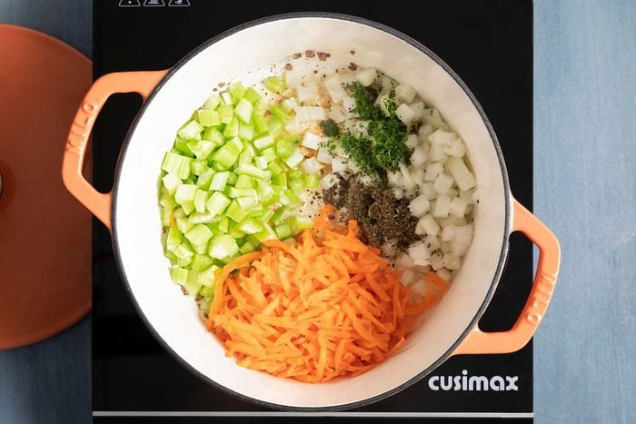

Cheeseburger Soup
Worlds finest and most delicous soup

Cheeseburger Soup Recipe
- Ground Beef: Lean ground beef is best for cheeseburger soup. You can use a higher-fat
blend
like 80/20, but
be sure to drain off all the excess grease to avoid an oily finish.
- Flour and butter: These ingredients come together to create a roux, which is commonly used
to thicken
sauces.
- Vegatables: The aromatic combination of onions, carrots and celery gives the soup depth and
adds a burst of
color.
- Potatoes: Use your favorite type of potato in cheeseburger soup. You can even use frozen
cubed hash brown
potatoes!
- Chicken broth and milk: The combination of savory chicken broth and creamy milk gives this
soup some serious
cheeseburger vibes. For a richer flavor, use half-and-half.
- Velveeta: We love Velveeta cheese recipes! This processed cheese gives the soup a thick
texture and an
extra-cheesy finish.
- Sour Cream: This tangy ingredient thickens the soup and adds a light acidity to balance all
the rich
flavors.
Step 1: Brown the beef
Step 2: Saute the vegetables

In the same saucepan melt 1 tablesppon butter over medium heat saute:
- Onions
- Carrots
- Celery
- Basil
- Parsley
Until the vegetables are tender, about 10 minutes.